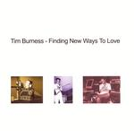

| Artist: | Burness, Tim |
| Title: | Finding New Ways To Love |
| Label: | Expanding Consciousness EXPAND 13 |
| Length(s): | 40 minutes |
| Year(s) of release: | 2004 |
| Month of review: | [03/2005] |
| 1) | Count In | 0.20 |
| 2) | Open Man | 4.34 |
| 3) | Stepping Out | 4.36 |
| 4) | Returning To You | 0.48 |
| 5) | Heal Your Soul | 3.15 |
| 6) | Unstoppable Waves Of Joy | 4.36 |
| 7) | An Interlude With Monty | 3.43 |
| 8) | Beneath The Surface | 1.30 |
| 9) | Love Is For Giving | 4.54 |
| 10) | Tomorrow's God | 3.36 |
| 11) | Walk Through The Darkness | 5.17 |
| 12) | One Dream | 2.01 |
Stepping Out has the same elements, although it is less bouncy. There is more an alternation between rock and more atmospheric sounding verses. The references to Gabriel and Sting can now be understood. As a vocalist Burness is okay, but not nearing the calibre of Gabriel or Sting. The end is quite uplifting.
Returning To You is another short one, featuring backwards guitar mainly. Sounds really nice, actually. There is a kind of tension in there. Heal Your Soul opens melancholically enough with lazily strummed guitars. Although the song was made before the tsunami, it seems for apt for the situation. A very moody tune, and a good one too.
What to think of a title like Unstoppable Waves Of Joy? Well, it like the two coming tunes are in fact instrumentals. There is something very anthemic about this one, the bass being similar to One Of These Days, but the guitar playing sustained notes and the keyboards sounding very friendly. The beat sets in after a while, as does the guitar. Again, this sounds very good. Nothing very complex, but very enjoyable.
An Interlude With Monty is fully Monty (Oxy Moron). He plays a piano only track, rather classically styled. It would not surprise me if the real name of this man is Burrow, the person given the credits for the track. There is a certain Banksian feel to it.
Beneath The Surface is the final instrumental for now, and a rather formless one, leading us into Love Is For Giving. This is a laid back tune, with a somewhat psychedelic feel. Tomorrow's God is yet another instrumental (strange that at first glance this seems so much a vocal album, while so many are instrumental tunes). Hammered dulcimer plays the role of acoustic guitar here, and the e-bow adds some nice atmospheric overtones.
Walk Through The Darkness is the only track to surpass the five minute length. It features rhythm guitar and is one of the rockier tracks. It is also one of the more progressive sounding ones, enhanced by some of the Crimsonesque guitar lines and the use of organ. I am also reminded of It Bites here, also in the sound of the vocals.
One Dream is only Tim playing. This one sounds rather demoish, and features only acoustic guitar in the first part, but is sounded out with Frippian soundscapes.